Chapter 5 · Part 1 — Gold in the Grass
“! !” . threw his into his pack. pushed toward the rope .
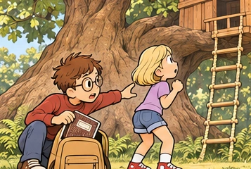
“Bye, Henry!” .
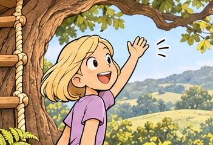
“!” . gave a big push.
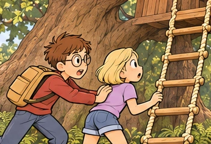
“Quit !” . But started up the . after her.
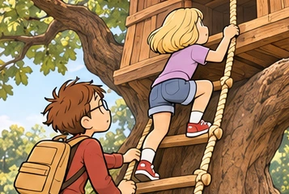
They tumbled into the .
They were as they out the window at the dinosaur. was standing on the hilltop. Eating flowers off a tree.
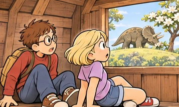
“Oh, man,” . “ are in a time long ago!”
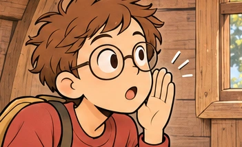
The dinosaur like a rhinoceros. Only had three horns instead of one. Two long ones above his one on his nose. had a big -like thing behind his head.
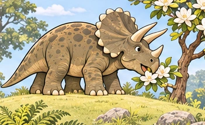
“!” .
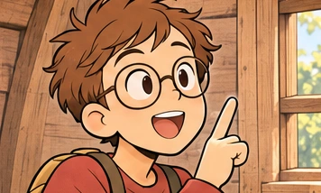
“Does eat people?” .
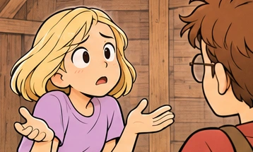
“I’ll up.” grabbed the dinosaur . flipped through the pages.
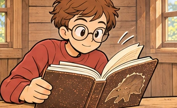
“!” . pointed to a of a . read the caption:
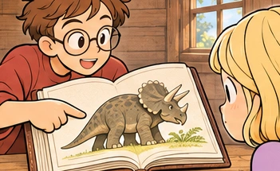
The lived in the Cretaceous period. plant-eating dinosaur weighed over 12,000 pounds.
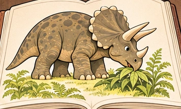
slammed the shut. “Just plants. meat.”
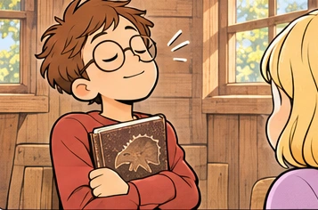
“Let’s him,” .
“Are nuts?” .
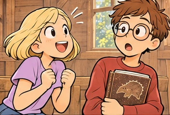
“Don’t want to take notes him?” . “’re probably the first people in the whole world to ever a real live .”
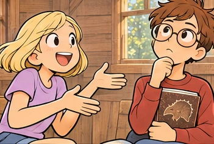
. was right.
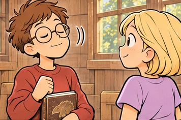
“Let’s ,” .
the dinosaur into his pack. slung over his shoulder started down the .
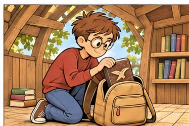
On the way down, stopped.
called up to , “Just won’t pet him.”
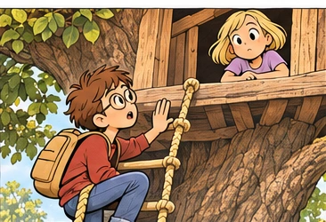
“I .”
“ won’t him.”
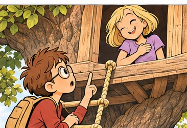
“I .”
“ won’t talk to him.”
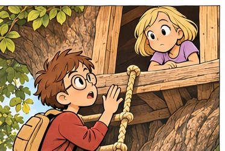
“I .”
“ won’t—”
“! !” .
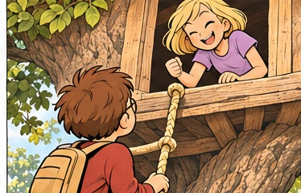
went.
followed.
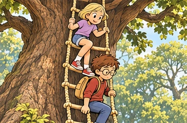
When they stepped off the , the gave them a .